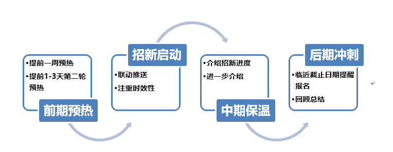

5.1. 宣传¶
希望宣传团队的各位通过宣传手段，提升队伍在校内及社会上的影响力，以全面提升战队综合实力。
5.1.1. 宣传团队的组建¶
宣传经理只是对于宣传小组的一个统称，建议战队的宣传工作是以宣传小组（3-5人，主负责人一名，其他队员打辅助）的形式运作。宣传经理/宣传组需要具备的基本技能有：稿件撰写能力、微信图文编辑、基础PS、基础视频剪辑、基础新闻图片摄影和商务沟通等能力。
建议合理的人员配置类型：某高校战队3人宣策组为例。（仅作参考）
工作内容 |
负责人 |
|---|---|
微信小编、微博小编 |
ABC轮流 |
活动策划、设计排版、 |
A（主负责人） |
对外联络沟通 |
B（招商经理兼职） |
摄影、视频拍摄 |
C（视觉组兼职） |
有了合理的人员配置，战队宣传工作如何做得有声有色还需要队长、项管的支持，调动所有队员支持关键事件的宣传工作（招新期、比赛期）以招到战队最需要的人才和在校园的获得更多同学的支持与认可。
在队伍建设的过程中有一部分队伍没有重视宣传工作的落实，或者是将宣传单独列为一部分，与队伍的日常技术研发、备赛日常割裂开了。宣传干宣传的活，技术干技术的活，导致宣传人员被队伍边缘化（通俗来讲就是队伍内建没做好，人员相互不熟悉）。
为了避免这类问题的发生，宣传队伍首先不能设置得过于冗余（人数过多），其次，宣传工作要围绕战队发生的故事进行。简单来说就是向学校的同学介绍战队的日常，让更多的同学老师了解战队在做的事情，得到更多的认可。
5.1.2. 相关资料的积累¶
经历过招新，新的队伍可以扬帆起航。宣传工作一个重要的部分就是宣传素材的积累。在这里列举一些平时很容易就可以做到，并且在往后宣传中可以发挥重大作用的操作。
建立战队图片库
通过日期+事件名称，收集整理战队图片；
制定图片图像拍摄标准，如：办一个活动需要怎样的图片或视频才能够最好地展示自己队伍形象呢？
为招商手册积累图片素材；
为战队宣传推送稿件提供图片、影像素材；
赛季结束后可利用图片制作电子相册、表情包增加队伍感情。
整理战队相关数据，对外介绍文案
撰写战队介绍文件包含：基本介绍、发展历程、战绩成果、战队成员，定期迭代更新；
该资料可用于商务渠道拓展、校园媒体采访介绍、使战队有统一对外宣传口径，成熟化运营。
校园渠道拓展（具体可参照下文校园资源开拓）
注重自有社交媒体运营，后期可与相关媒体进行资源置换；
平时留意积累校园媒体名单，通过各种渠道打通关系积累人脉。
5.1.3. 自有媒体运营指引¶
运营自有媒体是经费有限的条件下最有效的对外宣传手段，在此首先介绍一下宣传的整体策略，然后以招新宣传为例向大家展示如何运作。
5.1.3.1. 宣传的整体策略¶
自媒体本身就是战队对外展示一个最好的窗口，对于提升战队校园关注度，吸引招商都有不容忽视的作用。下面将围绕受众分析和策略制定两个方面探讨宣传工作的开展。
吃瓜大众
吃瓜大众是战队支持的核心力量，参赛队伍代表的是学校出征，所以要从学校荣誉感的层面出发去吸引大家关注赛事队伍；
同时也可以通过介绍参赛队伍备赛的日常趣事进行包装，将一些有趣的过程推向大众；
可与兄弟高校配合联动推送，打情骂俏，增进感情。
技术相关群体
可定期通过撰写干货内容周报、月报培养忠实读者。
整体
定位轻松，有趣为主，培养粉丝。
5.1.3.2. 招新宣传为例展示运作¶
有了对招新流程一个完整的流程的了解，我们就要思考我们的宣传策略，主要分为两个维度：一是面向目标受众精准推荐；二是面向吃瓜群众刷存在感。
前期预热阶段
目的
过赛队介绍，堆砌成绩数据、全国影响力等数据，让新手对RoboMaster战队有一个初步的认识；
通过具有传播度的微信稿件，利用RoboMaster官方发放的物资可做转发抽奖活动增加招新摆台现场人气；
强烈建议将战队介绍整理成一篇可转发的微信稿件用于基础介绍；
可与相熟的社团进行互动，提升曝光量。
选题参考
《RoboMaster:触手可及的机甲梦》
《这是一个让全校疯狂的比赛》
《富可敌国的RoboMaster战车到底长啥样》
《父母叫我立刻退出这个社团》
招新启动
目的
正式宣传号角，给予潜在用户一个线上宣传信息，可转发到各大微信群。
选题参考
《内含福利！RoboMaster展位不见不散！》
《全场最酷的展位》
中期保温
目的
招新报名可能持续一段时间，在这段时间可以推送说明一下截止时间，并且进一步介绍战队信息；
可将目标定位于犹豫的同学中。
选题参考
《内含福利！RoboMaster展位不见不散！》
《全场最酷的展位》
后期冲刺
目的
提醒同学截止日期，抓紧填写报名表格。
选题参考
《明天截止，等你加入机甲大师！》
5.1.4. 实体活动的组织¶
实体活动可以说是宣传中至关重要的环节，可以把这种活动当做是战队线下交流同时也是战队圈粉的重要方式。下面就列出几种可行的线下交流活动供大家参考：
前期准备
工作内容
整理队伍自身成就数据（成绩、人数、科研成果、自有渠道资源数据、校园影响力等介绍文档）可参照战队招商指南制作；
整理自有资源，例如认识哪些人、指导老师能够给予哪些帮助。
注解
简单来说：自评，自知之明。
目标渠道
工作内容
列明资源目标清单（学校官方账号等）；
通过联系人或者后台联系的方式进行沟通；
列出校内可用渠道资源表（收集）。
注解
多方面搜集相关数据
交流谈判
工作内容
友好谈判以互利共赢的形式进行。
注解
陈恳交流
框架协议
工作内容
巩固成果，通过签订合作协议或其他方式巩固成果。
注解
校内一般双方口头约定即可。
5.1.5. 实体活动的组织¶
实体活动可以说是宣传中至关重要的环节，可以把这种活动当做是战队线下交流同时也是战队圈粉的重要方式。下面就列出几种可行的线下交流活动供大家参考：
校内战队开放日
运作方式
通过实验室开放预约参观的形式向校内同学介绍战队文化；
机器人动态展示，体验等；
目的：为战队圈粉、吸引潜在技术人才。
官方支持
提供一定的宣传工作指引，及物料制作支持。
区域校内交流会
运作方式
举办同地区不同战队交流；
通过讲座分享的形式交流；
战队可进行机器人研发交流；
同时可设置较为简单适合普通观众参与的赛事、技术分享。
官方支持
提供物料设计及制作支持；视情况派出官方工程师前往交流。
校内赛
运作方式
详见校内官网
官方支持
提供宣传物资、一定的资金。
表演赛&战车体验会
运作方式
邀请同一地区战队在学校场地内进行对抗训练表演赛，为分区赛热身同时测试机器耐久度；
战车大逃亡，简单的步兵车体验，体验操控。
官方支持
宣传物料，优秀活动奖励评选。